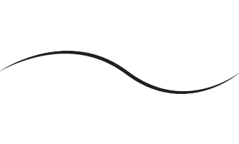

Back
All of the materials used in my products come from Fire Mountain Gems. They also have a cool glossary and a lot of how-tos.
All of the materials used in my products come from Fire Mountain Gems. They also have a cool glossary and a lot of how-tos.
Maintenance Hatch
Here you will find articles pertaining to how to adequately maintain your items that I sell here.Due to the malleable nature of the metals and findings, sometimes jumprings will open and a necklace or a bracelet may fall off. Not to worry! If all of the parts are still in your possession, its nothing a simple plier can't fix. If you don't, you can send your item back and I will fix it, free of charge!
Glossary
Repair a stretched jumpring
More Articles and Glossary entries to come.
Home
Products
About the Beadiator
Forums and Social Interactions
Maintenance Hatch
Contact Form
Back to Top ^
Copyright © 2012 Aspired Creativity - Kimberly Jackson
Back to Top ^
Copyright © 2012 Aspired Creativity - Kimberly Jackson